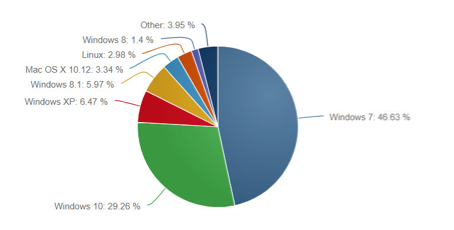

¿Qué es un sistema operativo?
Es un programa o conjunto de programas de un sistema informático que gestiona los recursos de hardware y provee servicios a los programas de aplicación, ejecutándose en lenguaje maquina en modo privilegiado respecto de los restantes.
¿Tipos de sistemas operativos?
Windows es un sistema operativo desarrollado por la empresa de software Microsoft Corporation, el cual se encuentra dotado de una interfaz gráfica de usuario basada en el prototipo de ventanas (su nombre en inglés). Una ventana representa una tarea ejecutada o en ejecución, cada una puede contener su propio menú u otros controles, y el usuario puede ampliarla o reducirla mediante un dispositivo señalador como el ratón o mouse.
Linux es un sistema operativo de software libre (no es propiedad de ninguna persona o empresa), por ende no es necesario comprar una licencia para instalarlo y utilizarlo en un equipo informático. Es un sistema multitarea, multiusuario, compatible con UNIX, y proporciona una interfaz de comandos y una interfaz gráfica, que lo convierte en un sistema muy atractivo y con estupendas perspectivas de futuro.
Mac OS es el sistema operativo de Apple para sus computadoras de escritorio y portátiles. Mac OS son las siglas de “Macintosh Operating System” o lo que es lo mismo “Sistema Operativo Macintosh”. Este sistema operativo es exclusivo para los dispositivos producidos por Apple, cualquier copia que exista de un sistema operativo Mac representa un plagio para la compañía y varias demandas existen en la actualidad.
¿Sistema operativo más utilizados?
